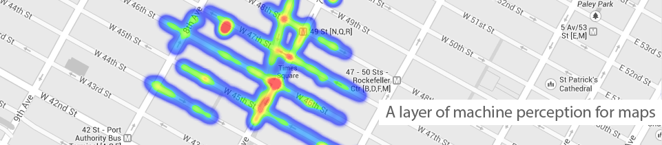

Vivid Streets
home
how-to-use
research
map
about

The app
Vivid Streets uses image processing techniques to identify colorful and vibrant streetscapes in the city.
Read more.
Discover the city
Vivid Streets help us discover which places and routes are more visually stimulating.
Recent tweets:
Tweets by @vividstreets
Connect with us: